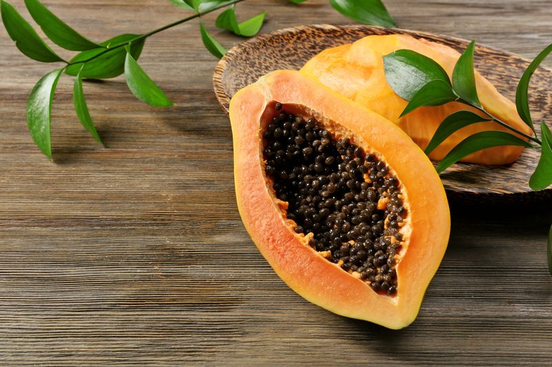
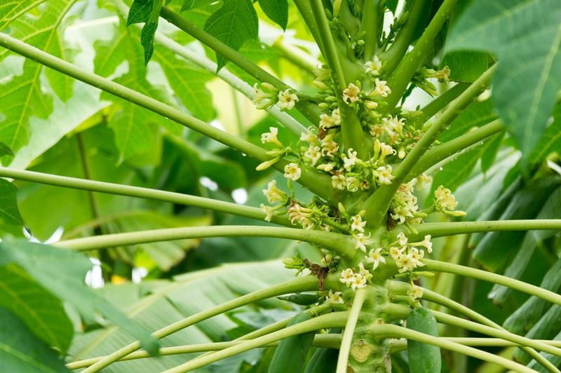
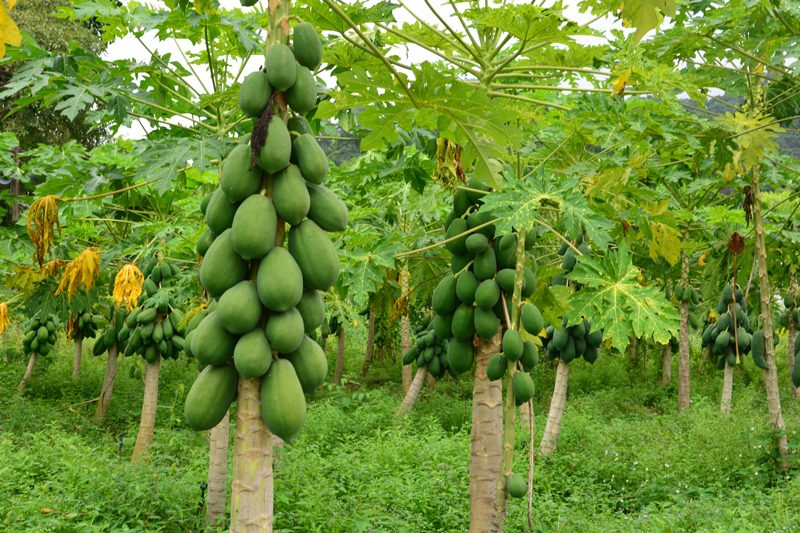

Papaya – Does it taste like Soap?
It took years for me to warm up to papaya. My first introduction to it was when I was sixteen years old and working in the health food department at our local grocery store. It was dried and so loaded with sugar that it just tasted like a piece of gummy, sweet soap. It’s unfortunate that that was my first experience because the impression of it left me going over a decade before I was willing to try it again.
The fruit’s taste is vaguely similar to pineapple and peach, although much milder without the tartness, as well as creamier and more fragrant, with a texture of slightly over-ripened cantaloupe. Now there’s a description for you.

Papaya is native to Central America and exists in tropical and subtropical areas throughout the world. This large, short-lived perennial plant with a single trunk can reach up to thirty feet at maturity. Get this… the leaves are over three feet in width.
There are three different tree types; female plants, male plants, and bisexual plants. The female and bisexual plants are the only ones that produce fruit. Depending on the tree type, this fruit is small to medium round or medium to large oblong shape. Fruit flesh is generally yellow, although some red and orange types exist as well. Depending on the growing conditions, a tree may produce 30 to 150 fruits each year.
All parts of the tree contain latex. The hollow green or deep purple trunk is straight and cylindrical with prominent leaf scars. The flowers are similar in shape to the flowers of the Plumeria but are much smaller and wax-like. They appear on the axils of the leaves, maturing into the fruit. Papaya trees bloom all year long. After the first year, there should be a constant supply of both fruits and flowers on the tree.

Hawaiian Papayas
There are two main types of papayas, Hawaiian and Mexican. The Hawaiian varieties are the papayas commonly found in supermarkets. These pear-shaped fruits generally weigh about one pound and have yellow skin when ripe. The flesh is bright orange or pinkish, depending on variety, with small black seeds clustered in the center.
Mexican Papayas
These are much larger than the Hawaiian ones and may weigh up to ten pounds and can be more than fifteen inches long. The flesh may be yellow, orange, or pink. The flavor is less intense than that of the Hawaiian papaya but is still delicious and extremely enjoyable.
A properly ripened papaya is juicy, sweetish, and somewhat like a cantaloupe in flavor, although musky in some types. The fruit (and leaves) contain papain which helps digestion and is used to tenderize meat. The edible seeds have a spicy flavor somewhat reminiscent of black pepper.

Harvest
Papayas are ready to harvest when most of the skin is yellow-green. The papaya fruit is left on the plant to continue mellowing its flavor for as long as they can. As the color develops, the fruit’s sugar content rises, improving the flavor. When ready, they twist the papaya fruit to break it from the stem.
After several days of ripening at room temperature, they will be almost fully yellow and slightly soft to the touch. Squeeze the papaya, if it yields to finger pressure on the rounded end it is ready. The more it gives, the riper the fruit. Don’t wait until the end becomes soft and mushy. Refrigerate the fully ripe papaya for four to seven days. I once approached a gentleman who worked in the produce section of the grocery store. I asked him to help me select a ripe papaya. As we rummaged through a pile of them, he said, “If you want to eat it today, look for one that looks like it should go in the trash… that is when it is truly ripe.” He was right and I have used this method each time I buy one.
They are often sliced and eaten by themselves or served with a myriad of other foods. They can also be cooked to make chutney or various desserts. Green papayas should not be eaten raw because of the latex they contain, although they are frequently boiled and eaten as a vegetable. In the West Indies, young leaves are cooked and eaten like spinach. In India, seeds are sometimes used as an adulterant in whole black pepper.
How the WHOLE Tree & Fruit are Used
Just about everything on the papaya plant is EDIBLE. The fruit, leaves, flowers, stems, roots, and seeds. Caution should be taken when harvesting, as papaya is known to release a latex fluid when not quite ripe, which can cause irritation and provoke an allergic reaction in some people.
Papaya Flesh
- Protein, fat, fiber, carbohydrates, mineral: calcium, phosphorous, iron, vitamin C, thiamine, riboflavin, niacin and carotene, amino acids, citric and malic acids (green fruit).
- Enjoy fresh papaya with lime or lemon juice drizzled on top to bring out the best flavors. The acid complements the papaya’s creamy mouthfeel and mild flavor. Simply peel, remove seeds, dice, and drizzle acid.
- The ripe fruit is usually eaten raw, without the skin or seeds.
- The unripe green fruit of papaya can be eaten cooked, usually in curries, salads, pies, and stews.
- The mature (ripe) fruit also has been used to treat ringworm while green fruits have been used to treat high blood pressure.
Papaya Seeds
- The black seeds are edible and have a sharp, spicy taste. They are sometimes ground up and used as a substitute for black pepper.
- Made up of fatty acids, crude protein, crude fiber, papaya oil, carpaine, benzyl isothiocyanate, benzyl glucosinolate, glucotropaeolin, benzoyl thiourea, hentriacontane, – sitosterol, caressing, and enzyme myrosin.
- The seeds are considered to be anti-inflammatory and analgesic (pain reliever), and they are used to treat stomachache and fungal infections, while the leaves have been used as a heart tonic, analgesic, and to treat stomachache.
- The seeds contain high levels of the proteolytic enzyme papain, which can help rid your body of parasites such as intestinal worms. In the same way that papain breaks down undigested protein waste from your food, it can also dissolve the protective biofilm and fibrin that covers parasites, and particularly their eggs, on the walls of your lower intestine.
- Good levels of digestive enzymes in your diet also help to improve and normalize your intestinal ecology, making it much less hospitable to worms and other parasites and much harder for them to breed.
- Papaya seeds are often reported as an effective natural treatment for liver cirrhosis and overall detoxification of the liver.
- The seeds of papaya have a strong antibacterial and anti-inflammatory effect on your digestive system. (1)
Tree Trunks
- The tree trunk offers ecological values, providing food and habitat for insects, birds, and other animals.
Papaya Bark
- The bark consists of sitosterol, glucose, fructose, sucrose, and xylitol.
- It’s used for making rope.
Papaya Leaves
- The leaves consist of alkalosis carpain, pseudocarpain and dehyrocarpaine, choline, carposide, and vitamin C and E.
- In some parts of Asia, the young leaves of papaya are steamed and eaten like spinach.
- Used as a soap substitute, are supposed to remove stains.
- The leaves can be heated and applied to areas of the body to relieve pain and swelling.
- Papaya leaves are smoked for asthma relief.
Papaya Latex
- The latex consists of Proteolytic enzymes, papain, glutamine, cyclortransferase, chymopapain A, B, and C, peptidase A and B, and lysozymes.
- Stems and leaves on the plant sap of papaya contain a white as milk (latex).
- More than ten amino acids are contained in papaya latex, such as aspartic acid, threonine, serine, glutamic acid, proline, glycine, alanine, valine, isoleucine, leucine, tyrosine, phenylalanine, histidine, lysin, arginine, tryptophan, and cysteine. (1)
- Cysteine protease which is found in the latex of the Papaya tree is a crucial factor in the defense of the papaya tree against pests.
Papaya Flowers
- Its slightly peculiar and bitter taste, like that of bitter gourd, isn’t everyone’s cup of tea but is still very enjoyable.
- There is a content of the enzyme papain in papaya flowers other than on the fruit. These enzymes help digestion work better and prevent constipation.
- There is a high antioxidant which is used to reduce inflammation in the stomach.
Papaya Roots
- The roots consist of carposide and enzyme myrosin.
- The roots of papaya for de-worming as well as helping to prevent the risk of kidney stones.
In the Raw Recipe Application
- Papayas are great to add as the base to any smoothie. It adds a nice creaminess.
- Blended with mango, they can create an amazing smooth textured pudding.
- Dehydrate them and enjoy alone as a snack or diced them up and add to trail mixes.
- Slice fresh, ripe papaya and add to a colorful green leafy salad.
© AmieSue.com